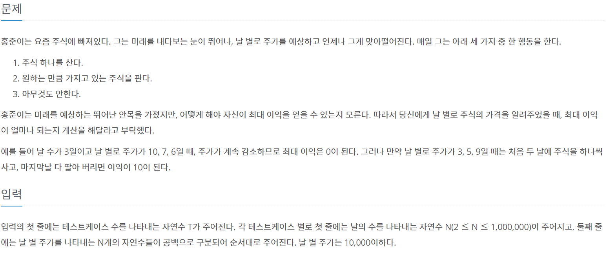
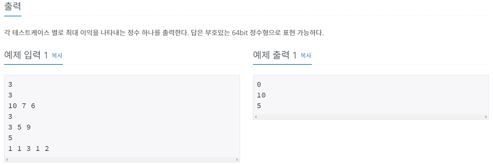
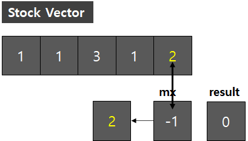
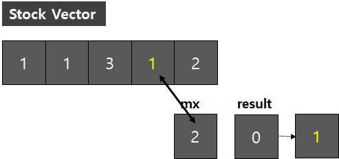
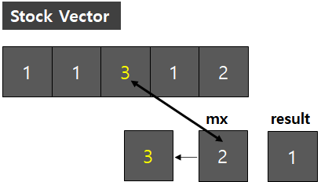
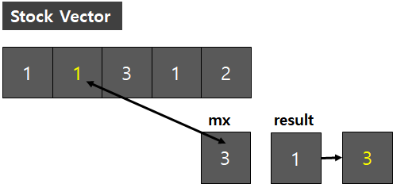
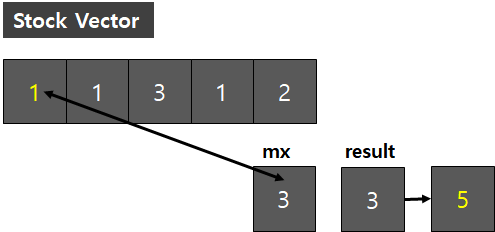

#문제정보
출처 : www.acmicpc.net/problem/11501
 
#문제분석
사용된 알고리즘 : 그리디(GREEDY)
stock(주식을 저장하는 벡터)를 뒤에서 부터 차례로 검사하여, 최댓값을 갱신하며 차이 만큼 빼주어 결과값에 더하는 그리디 방식으로 풀이했다. [1 1 3 1 2] 를 예시로 설명하도록 하겠다.
1번째 비교
5번째 인덱스 [2] 와 mx [-1] (mx는 미리 -1로 초기화 해둔다.) 을 비교한다.2 > -1 이므로 mx의 값을 2로 변경한다.mx = 2 , result = 0

2번째 비교
4번째 인덱스 [1] 과 mx[2]를 비교한다.
1 < mx[2] 이므로, mx[2]와 1의 차이인 1만큼을 result 변수에 더해준다.
mx = 2 , result = 1

3번째 비교
3번째 인덱스[3]과 mx[2]를 비교한다.
3 > mx[2] 이므로, mx 값을 3으로 변경한다.
mx = 3 , result = 1

4번째 비교
2번째 인덱스[1]과 mx[3]을 비교한다.
1 < mx[3] 이므로, mx[3]과 1의 차이인 2만큼을 result 변수에 더해준다.
mx = 3 , result = 3

5번째 비교
1번째 인덱스[1]과 mx[3]을 비교한다. 앞의 "4번째 비교"와 동일하다.
1 < mx[3] 이므로, mx[3]과 1의 차이인 2만큼을 result 변수에 더해준다.
mx = 3 , result = 5

물론 [10, 7 , 6] 같은 주식을 사지 않는게 최선의 선택인 경우에도 동일하게 적용 가능하다.
매 순간마다 mx 값이 0으로 초기화 될테니 차이가 모두 0이되어 0이 출력된다.
그런데, 조심해야할 부분은 result를 long 혹은 long long 형으로 선언해 주어야 한다는 것이다.
문제 조건 "64bit 정수형으로 표현 가능하다."를 지나쳐서 계속 틀렸었다,,,
여기만 유의해 주면 어렵지 않게 풀 수 있는 문제이다.
#소스코드
#include <iostream>
#include <algorithm>
#include <vector>
using namespace std;
int main()
{
int testCase = 0;
cin >> testCase;
for (int i = 0 ; i < testCase ; ++i)
{
int N; cin >> N;
vector<int> stock;
for (int j = 0 ; j < N ; ++j)
{
int temp;
cin >> temp;
stock.push_back(temp);
}
// Greedy Solve
int mx = -1;
long result = 0;
for (int k = N - 1 ; k >= 0 ; k--)
{
mx = max(mx, stock[k]);
result += mx - stock[k];
}
cout << result << "\n";
}
return 0;
}